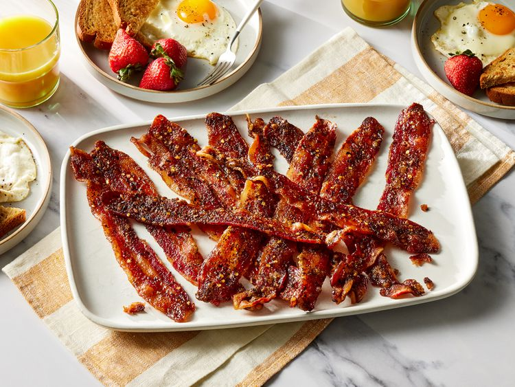

Million Dollar Bacon

Description
This million dollar bacon is sweet and spicy, caramelized on top, and chewy with crisp edges. Very tasty!
Ingredients
- 1 pound of Thick-Cut Bacon
- 1/3 cup Packed of Brown Sugar
- 1 teaspoon of Crushed Red Pepper
- 1 teaspoon of Freshly Ground Black Pepper
- 1/8 teaspoon of Cayenne Pepper
- 1/4 cup of Pure Maple Syrup
Steps
- Gather all ingredients.
- Place oven rack in center of oven and preheat to 350 degrees F (175 degrees C).
- Line a large rimmed baking pan with foil. Place a wire rack on top of foil.
- Lay bacon in a single layer on wire rack.
- In a small bowl combine brown sugar, crushed red pepper, black pepper, and cayenne pepper, if desired.
- Rub bacon with brown sugar mixture.
- Drizzle with maple syrup. Bake until caramelized and at desired doneness, 40 to 50 minutes
Home